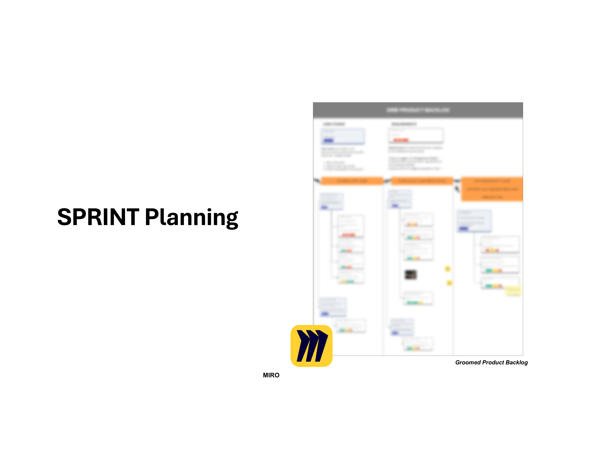
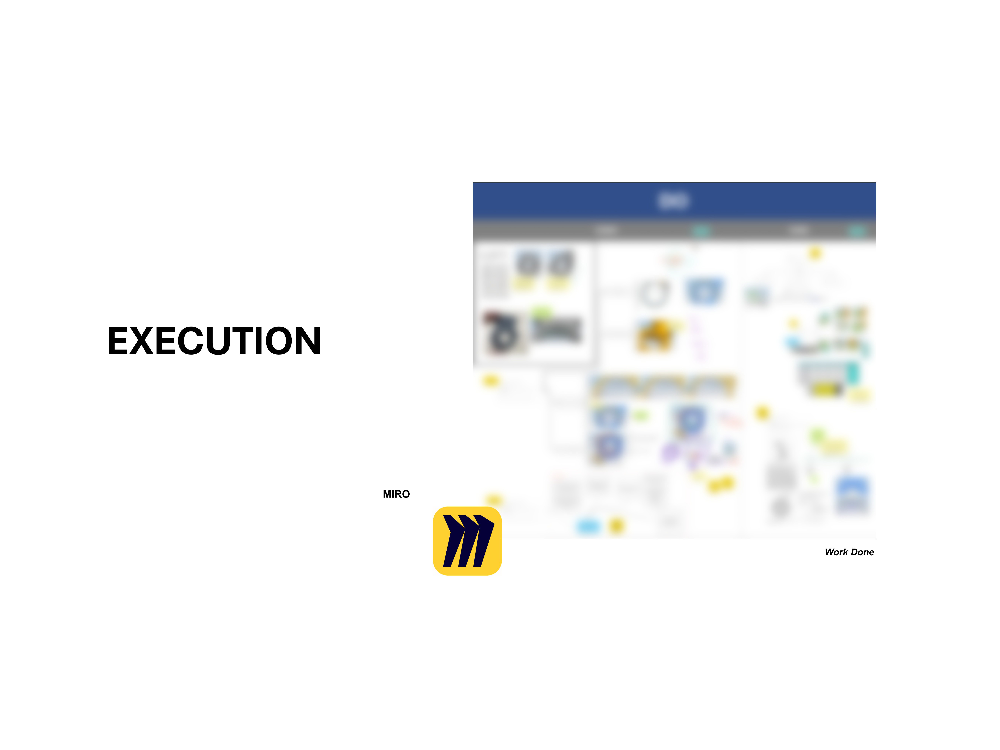

Team Collaboration and Activation
Cross-functional collaboration is a feature in large organisations.
Research functions to surface the market’s needs, keeping teams focused on user value amidst cost pressures or technology bottlenecks.
Facilitating Design Sprints
Problem / Opportunity:
Existing research insight pointed to an untapped opportunity in the urban bike market. The team was looking for a way to break free from conventional ideation methods.
Action:
I designed a week-long workshop, facilitating participants from RnD, Quality-Assurance and Sales, to flesh out design ideas.
5 of 31 ideas moved to prototype development.
Referenced Design-Thinking Resources
1. Ulwick, Anthony W. 2016. Jobs to Be Done: Theory to Practice.
2. Christensen, Clayton M., Taddy Hall, Karen Dillon, and David S. Duncan. 2016. Competing Against Luck: The Story of Innovation and Customer Choice. HarperBusiness.
3.Knapp, Jake. 2017. Sprint. Bentang Pustaka.
SCRUM for Agile Hardware Development
Problem / Opportunity:
Traditional hardware prototyping is slow. I looked to software development, to see if SCRUM and its quick iterative cycles could benefit us.
Action:
SCRUM practice cannot be directly adopted due to structural differences in hardware development.
I adapted the SCRUM approach,guiding a team of engineers to iterate and test prototypes.



Referenced SCRUM Resources
1. NUS Institute of System Science - Certified SCRUM Product Owner.
2. Böhmer, Annette Isabel. 2018. “When digital meets physical – Agile Innovation of Mechatronic Systems.” Edited by Udo Lindemann, Jürgen Gausemeier, and Wolfram Volk. Lehrstuhl Für Produktentwicklung Und Leichtbau.
3. Ullman, David G. 2019. Scrum for Hardware Design. David G. Ullman.